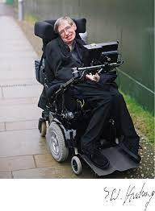

Stephen Hawking

Stephen William Hawking was an English theoretical physicist, cosmologist, and author who, at the time of his death, was director of research at the Centre for Theoretical Cosmology at the University of Cambridge. Stephen Hawking was born on 8 January 1942 in Oxford, England into a family of physicians. In the early 1960s Hawking contracted amyotrophic lateral sclerosis, an incurable degenerative neuromuscular disease which made him paralysed. After the loss of his speech, he communicated through a speech generating device initially through use of a handheld switch. Hawking worked primarily in the field of general relativity and particularly on the physics of black holes. He became professor of gravitational physics at Cambridge in 1977, and in 1979 he was appointed to Cambridge’s Lucasian professorship of mathematics, a post once held by Issac Newton. He died on 14 March 2018 Cambridge, England.
